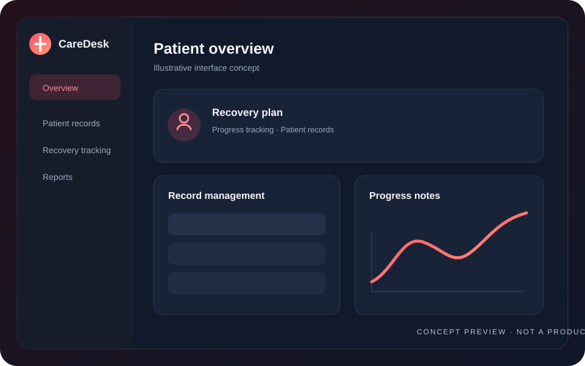

Mental Health & Recovery Management System
Java
MySQL
Tkinter
A desktop application for managing patient records, recovery tracking, and mental health data with full CRUD operations.
Read case study
Challenge
Keep patient records and recovery progress organized in one practical workflow.
Approach
Use create, read, update, and delete operations to manage records and track recovery progress.
Project outcome
A desktop workflow for maintaining patient information and recovery records.
GitHub metrics will appear when a repository is configured.
Repository and live demo not configured